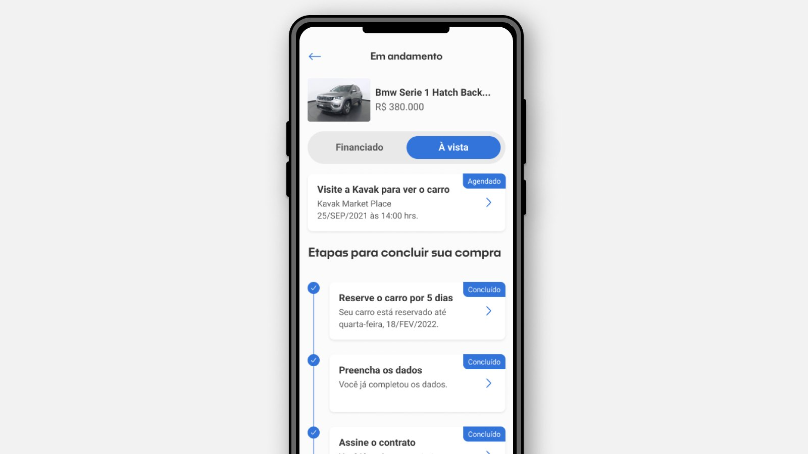
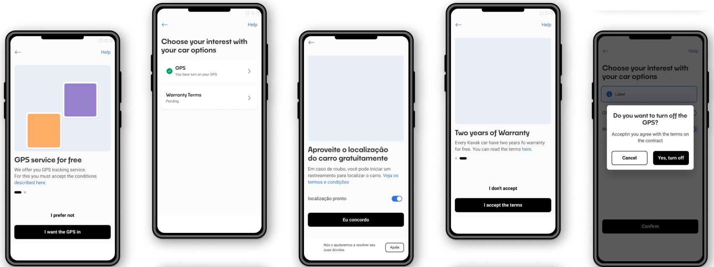
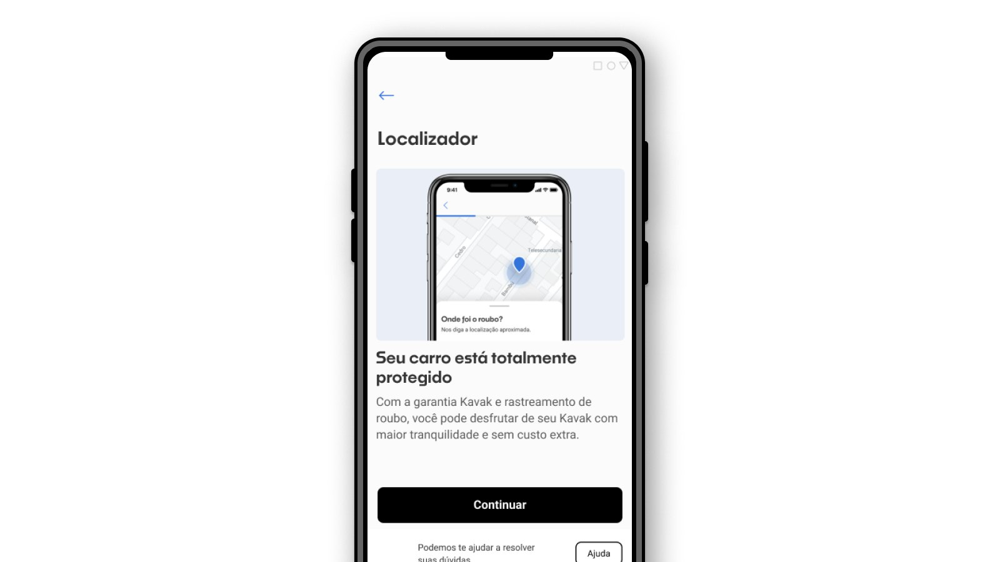
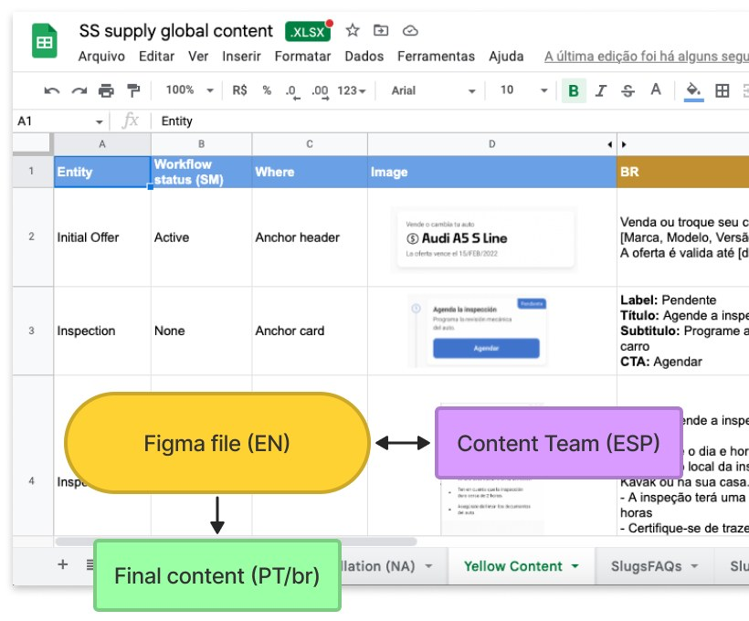
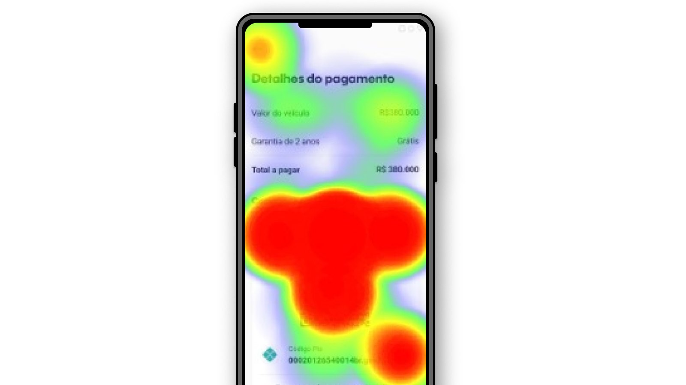
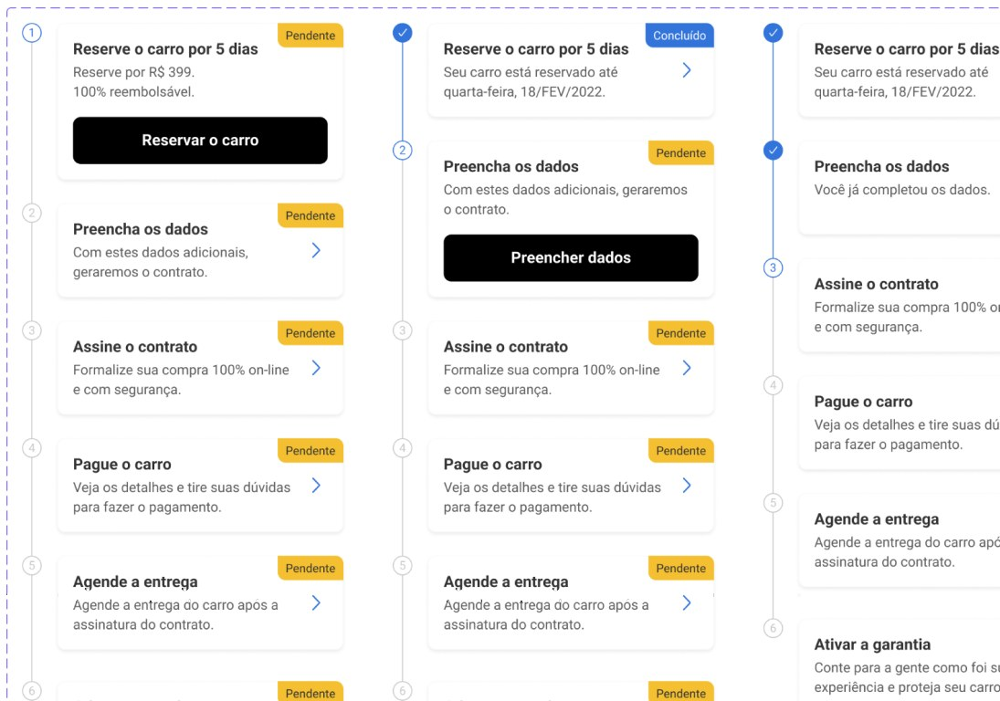

Automotivo · Internacionalização · Kavak
Mi Futuro Auto: levando a compra de carros self-service do México para o Brasil

O produto
Comprar um carro sem precisar falar com ninguém
Mi Futuro Auto é um produto da Kavak que permite aos clientes ter uma experiência self-service e totalmente autônoma na compra do seu carro. Em vez de precisar ir até um lugar, procurar um carro, falar com várias pessoas e passar por vários lugares, eles fazem tudo pelo celular, sem precisar falar com ninguém.
Além disso, os clientes têm:
Desafio
Mesma operação, outro país
A Kavak começou sua operação no México, então o desafio era adaptar para o Brasil o modelo que já havia sido criado.
Embora a operação seja parecida, cada país tem suas particularidades: a ordem de algumas etapas, a criação ou remoção de outras, regras de negócio que mudam (como quanto se paga para reservar um carro), os métodos de pagamento disponíveis em cada país, entre outras.
Em resumo: como adaptar nosso produto da operação do México para a do Brasil — e internacionalizá-lo mantendo a facilidade de escalar?
Pesquisa
O que se mantém e o que precisa mudar
O primeiro passo foi entender como os dois países funcionam: o que poderíamos manter igual e o que precisaríamos mudar. Para isso, entrevistamos pessoas do time de operações, agentes de vendas e outros stakeholders.
Os principais pontos que precisávamos adaptar eram:
Explorações
Localizador
Explorações para a oferta do serviço gratuito de rastreamento GPS: como apresentá-lo, pedir o aceite dos termos e permitir que o cliente recuse — junto com os termos da garantia de dois anos.

Uma das diferenças entre os dois países é a necessidade de uma resposta manual do usuário sobre o rastreador instalado em todos os carros. Por questões legais, precisamos dessa resposta para que ela seja incluída no contrato de venda.
Fizemos vários tipos de exploração com abordagens diferentes, mas no fim decidimos focar na segurança que o rastreador traz ao usuário, e não no seu caráter de GPS. Na escolha entre sim ou não, optamos por uma abordagem de aceite, criando um pouco de fricção para a recusa — a desinstalação era muito custosa para a empresa.

Conteúdo
Trabalhando com conteúdo
Trabalhar com o time de conteúdo gerou muito aprendizado — era a primeira vez que a empresa lidava com isso, então não havia um padrão. Nosso time de conteúdo era todo de falantes nativos de espanhol, enquanto nossos stakeholders no Brasil (e eu, na época) só falávamos inglês.
Então o fluxo era: criar o produto em inglês, deixar o time de conteúdo escrever em espanhol, voltar para o inglês e, no fim, traduzir para o português. Concluímos que o inglês acabou sendo uma etapa extra desnecessária, e nossas próximas iterações foram feitas direto do espanhol para o português.

Validação
Validando o fluxo de pagamento
Em uma primeira versão, foi implementado um novo método de pagamento que não tinha uma forma automática de rastrear cada transação. Por isso, criamos um recurso simples de envio de comprovantes, facilitando a identificação das transações pelo time financeiro.
Para validar, fizemos um teste de usabilidade simples no Maze, em que o objetivo era concluir o pagamento e enviar o comprovante. Tivemos bons resultados.
67
Participantes
85,1%
Taxa de sucesso
6,0%
Taxa de abandono

Handoff
Preparando para o desenvolvimento
Depois que todos os fluxos foram aprovados, o conteúdo revisado e a UI alinhada ao nosso Design System, era hora de preparar o arquivo para o time de tecnologia começar o desenvolvimento.
Tudo foi feito no Figma: todos os fluxos descritos, anotações feitas e todos os diferentes status dos componentes no mesmo arquivo.
